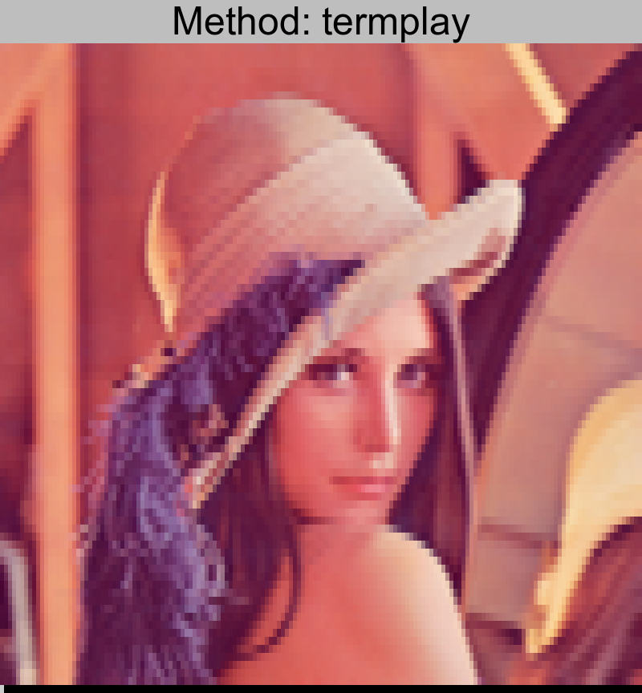
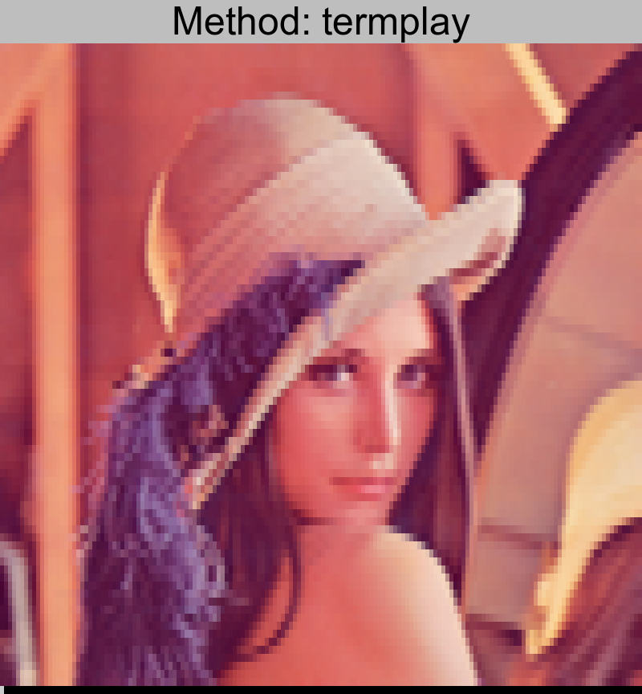

Another Comparison of Image to ASCII Conversion Tools (2017)
Time for another round of terminal-based ascii/ansi art image conversion tools. Check out my last post from 2015 with more comparisons of more tools.
This year I compare the best tool from 2015, img2xterm, against a new set of tools that I've stumbled across. email me with other tools if you would like to be included in the next round.
Methodology
For these tests I used an image with a 160px width, twice that of
a standard terminal. Then I cat'd the image in plain xterm and
took a screenshot of the results.
The original has been scaled up (6X) to be the same relative size as the resulting screenshots.
My entire methodology is on github
if you wish to see exactly how I made these images. In theory
it is 100% reproducible from make. (assuming on a linux desktop)
Tools Compared
Results
bender.png


lenna.png

 


nyan.png


Conclusion
img2xterm is the contender from the last comparison. Compared to this second wave of tools, its lack of 24bit color shows. It does have the most advanced colorspace conversion capabilities. If you want true-color, look elsewhere.
termplay is a converter written in Rust, capable of converting static images as well as videos. It has native youtube-dl support. It also has a unique feature to mirror an X11 window in real time in the terminal. This converter had the highest performance of all the tools. It probably has extra performance optimizations in order to support video. The lack of half-block character support show when put side-by-side with other converters.
TerminalImageViewer (tiv) has the unique feature of being able to use many different block formats, more than the half-block character, to create an interesting output. Look at the list of unique unicode characters available for use. Due to this feature, I had to provide an upscaled version of the source images in order to produce the the desired output.
pixterm‘s most prominent feature is its speed. Taking advantage of Go's concurrency features, it can convert images quickly using all available cores. It can also support a wide range of input formats.
timg‘s unique feature is that it can show animated gifs directly in the terminal. It can handle true color using the half-block character for double the vertical resolution.
| Tool | Color | Block Type | Language | Performance Overall, data | Extra |
|---|---|---|---|---|---|
| img2xterm | 256 | Half-Block | C | Medium (20, 13, 11) | Bash version available |
| termplay | True or 256 | Single Block | Rust | High (6, 5, 4) | Video support |
| TerminalImageViewer | True or 256 | 4x8 Unicode | C++ and Java | Low (48, 46, 45) | Extra unicode characters for multi-pixel matching |
| pixterm | True | Half-Block | Go | Medium (17, 17, 17) | multi-core processing |
| timg | True | Half-Block | C++ | High (10, 8, 7) | Animated gif support |
(Performance data is real time in ms for rendering bender, lenna, and nyan)
Winner: TerminalImageViewer
Even though it has relativly slow performance, its unique unicode rendering can give the highest “resolution” images available on a terminal. It does look a little weird on some images, so I'm glad it has the -0 option to force it back into half-block mode. In this mode it is just as good as pixterm or timg.
Runner up: timg
With true color and half-block support, timg creates very high quality versions of images in terminials. Combine this with its high performance and animated gif support, it is this year's runner up.